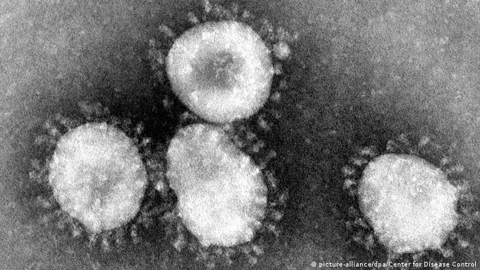
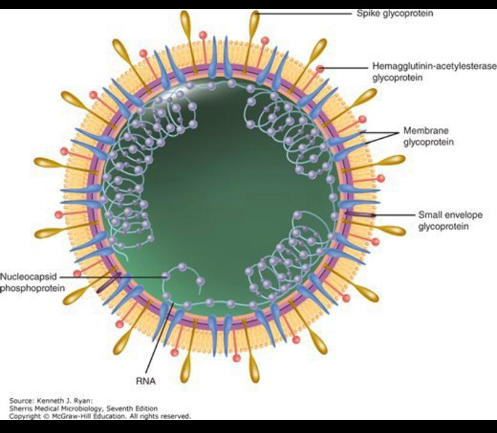
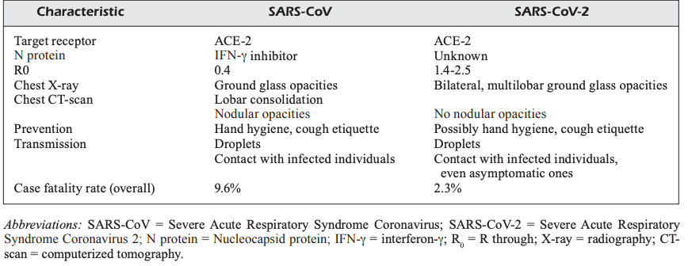
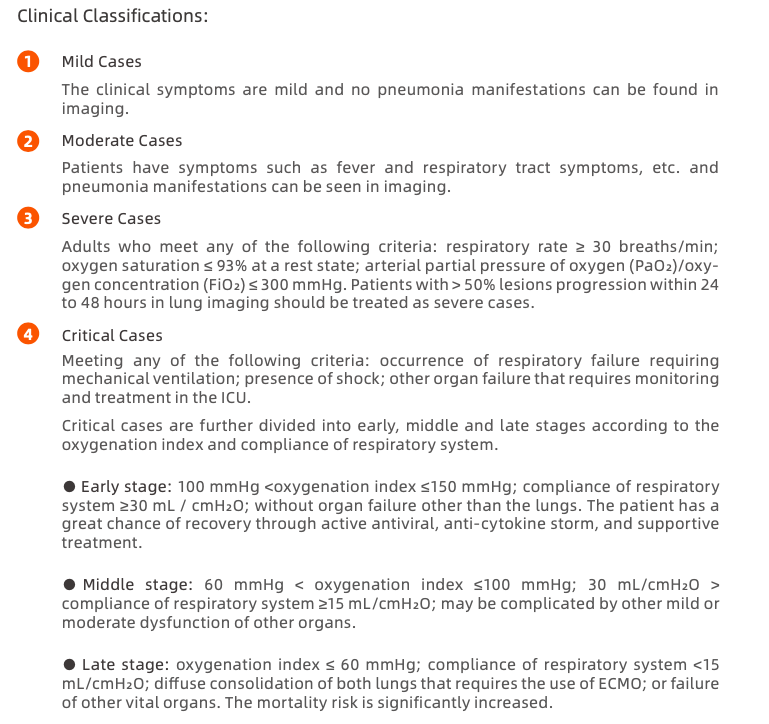
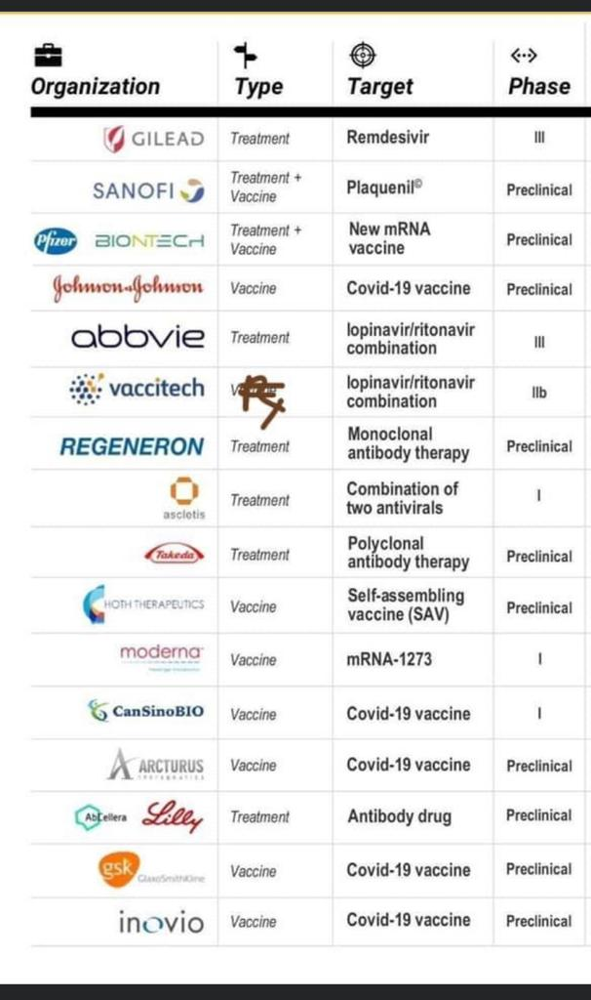
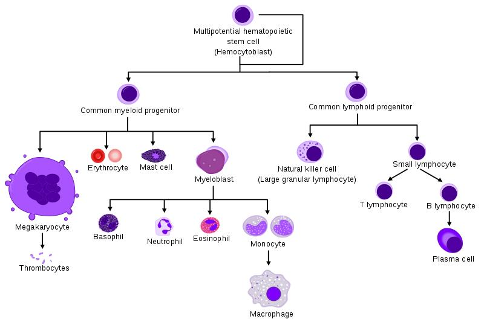

Disclaimer: Corona will go away soon. So, no need to worry. This is just our try to summarise the best learnings in a consumable way. As still this is an on-going learning field for many scientists.
There were Epidemics, Pandemics, Outbreaks of several viruses like Spanish Flu, Ebola, SARS, MERS, Nipah, Zika, Small Pox, Novel-Corona etc.; What makes Corona so special to gain much attraction is because of its rapidity in multiplication, contagiousness and fake news.

In this blog we are trying to write some serious medical science terminologies and explanations on Corona. Hope it may help you. Honestly, this exercise benefited a lot for me as it brought so much clarity in my thought process and a challenge to put the complex terms in a consumable way. Hope the blog keeps you engaged.
Note: Corona is not a Bio Weapon. It is “Just Another Rather Very Intelligent Virus” { J.A.R.V.I.V }
This blog has written by me under supervision of Dr. Mahesh. Majority of our source is from WHO publications link.
Since the research is still under progress by eminent scientists, scholars and analysts; we felt we should constantly update to the larger citizens in a consumable way rather than fake news.
1) How does it look and what is its special to draw attention?
Coronaviruses were first found in humans in the 1960s. The name is derived from their appearance under the microscope: The peplomers, the outwardly protruding protein structures of the virus envelope, are arranged in the form of a crown (from Latin: corona).

Coronaviruses are common and infections are often harmless with patients developing only flu-like symptoms, such as fever, cough and shortness of breath. Gastrointestinal complaints, especially diarrhea, can also occur. The incubation time for a coronavirus can vary from a few days to two weeks.
However, coronaviruses are also dangerous and can mutate. They are RNA viruses and have high genetic variability, meaning they can easily overcome barriers between different species. Often, an outbreak among humans originates with other mammals, rodents or birds.
As a consequence, the infections also can take more severe paths, causing respiratory distress and pneumonia, which can even lead to death.

If it is already discovered in 1960s. However, it is different from original corona virus and hence it is called also as Novel-Corona Virus since its RNA has been mutated and became better through Darwin theory. The interesting aspect in this virus is that has got better.
By seeing the shape of Corona, you can see that the virus looks a spherical ball with some miniature protruding rough structures. Usually these structures helps itself to dock on the host cells and invade in it. This novel virus has got better at docking perfectly with our host cells than earlier ones { 20 times more likely to bind/stick to our cells than earlier one } which becomes one of the prime reasons for its rapid progress. { Technically, it docks on ACE-2 receptor }
Once it docks, these viruses hijacks the cell and creates more copies of its own viruses. This will lead to increase in viral load in the humans. It got better in creating shorter as well longer viral copies without hampering much of its original RNA. Another clever aspect of the Virus is that it has the ability to de-activate the anti-viral properties present in the cell there by chance of reducing the immunity. However, that depends on the viral load and innate immune response system present in the body. { Innate Immune System - Is like soldiers which attack anything that is foreign in our body. Specific Immune System - Upon learning about the disease it attacks like a sniper or strategic surgical strike to the virus/bacteria/pathogens/parasites etc .; }.

Being soo near to zoonotic and coronavirus family. It is got special attention being soo contagious because of it survival instinct. { Which we will see in the below section. Earlier SARS is used to spread from Moderate to Severe Symptomatic patients only. However, this novel Corona spreads from Asymptomatic ones as well }
2) How a positive case for Corona is been identified? How can someone be Asymptomatic or Symptomatic
From the previous question we have learnt that the virus is novel and then it improved its docking system and then it have been good at developing it viral copies without much hampering its original RNA. After some time the virus will start to have significant copies of its original which is medically termed as Viral Load.
Viral load, on the other hand, relates to the number of viral particles being carried by an infected individual and shed into their environment. “The viral load is a measure of how bright the fire is burning in an individual, whereas the infectious dose is the spark that gets that fire going,” says Edward Parker at the London School of Hygiene and Tropical Medicine.
Ideally, after significant viral load we will show symptoms of corona virus which we are well aware.
Incubation Period: The “incubation period” means the time between catching the virus and beginning to have symptoms of the disease. Most estimates of the incubation period for COVID-19 range from 1-14 days at 99% Confidence Intervals, most commonly around five days. These estimates will be updated as more data become available.
This particular virus attacks the upper respiratory track during the 1st week after showing its symptoms { posts which symptoms reduces } and then moves towards the lower respiratory track i,e.; lungs and leading to further criticality.
The way to test the viral load is through any or all of the ways for better conclusive ways - Specimen types include: upper airway specimens (pharyngeal swabs, nasal swabs, nasopharyngeal secretions), lower airway specimens (sputum, airway secretions, bronchoalveolar lavage fluid), blood, feces, urine and conjunctival secretions. Sputum and other lower respiratory tract specimens have a high positive rate of nucleic acids and can be collected preferentially.
Depending on the viral load i.e.; infection rate and our immune response system the cases can be classified in the following way.

This particular Corona has learned to start spreading before the person start showing the symptoms i.e.; 48hrs to 24 hrs before the onset of symptoms { Like Flu }. This where albeit the person is asymptomatic the virus starts spreading through the droplets format.
Also, a person can be completely asymptomatic { i.e.; no symptoms} in the complete viral cycle except a little spike in temperature which would not even be noticed. However, they would be carriers of the virus of the disease through droplets till their immune system removes the virus from the body. { It is assumed of being more asymptomatic in the scientific research world that the virus rna might be weaker or the immune response system had got better at produced right set of antibodies in restricting and removing them }
Also, how does it spreads? - Zoonoses usually would be transmitted through direct contact between animals and humans as well as — like with many germs — simply through the air, such as by coughing or sneezing. But there are many other ways of infection, for example through food or vectors. A mosquito, tick or other insect can transport a pathogen from the host to another organism without becoming ill itself. In addition, zoonoses can also be transmitted via food, for example when eating meat or animal products. If these are not sufficiently heated or if they were prepared under unhygienic conditions, they also represent a source of infection.
3) What are the secondary diseases it might get ?
The good thing is that in majority of the cases the secondary infections are not observed upon the infection of this virus.
As we have seen in the Critical Cases of Fig5 as the severity goes up the oxygen level in the body comes down which is termed as hypoxemi which can lead to cytokine cascade { a situation where large number of white blood cells are released to deal with the infection leading to severe inflammation } and severe infections that might develop into shock, tissue perfusion disorders and even multiple organ failure. Due to this there is a chance for bacterial or fungal infection for the patients.
Also, as we learnt that the Corona Virus docks in ACE2 receptor cells. These are higher in number for the elder patients who have pre-existing diabetic, cardiac & chronic kidney diseases. { Because they are prescribed with some medication which will lead to increase in ACE2 receptor cells to mitigate those diseases patterns on daily basis }; further leading to increased viral load.
Usually, the critical patients with pre-existing complication which are primarily related heart and lungs would be more risk due to this cytokine storm; which is the reason for majority of the elderly patients who died in Italy doctors couldn’t certify the cause of death as Corona Virus.
4) How Supportive Care & Medication works in recovery
In first three questions we have learnt about the intelligence of Virus on how it hijacks our immune system for its survival. Further leading to hospitalisations and deaths {both are lower in number when compared to affected people}.
In this piece we will learn how doctors are helping for the speedy recovery for the patient when WHO has said it clearly that there is no prescribed medication and vaccination yet for this virus. Usually supportive care is suggested for the patients by WHO which is aimed at incentive removal and fluid recovery.
However, few countries are saying this - An early antiviral treatment can reduce the incidence of severe and critical cases. Although there is no clinical evidence for effective antiviral drugs, currently the antiviral strategies based on the characteristics of SAR-CoV-2 are adopted according to Protocols for Diagnosis and Treatment of COVID-19 book at our disposal.
Below is the write-up the ideal situation; however, i have read the cases where for less severe patients as well the anti-virals are provided.
Ideally
In mild to moderate cases the sufficient supportive care in terms of IV fluids and anti-inflammatory drugs { It has also been hypothesized that non-steroidal anti-inflammatory drugs (NSAIDs) may worsen COVID-19. Currently, there are no data suggesting an association between COVID-19 clinical outcomes and NSAID use. } will be provided to the patients helping the patients in natural recovery with aid of anti bodies fighting with the virus.
However, if the cases are advancing to severe and critical additional supportive like intubation, anti-shock & anti-hypoxemia are used to restore the body to normal and keep fighting. However, in case the patients are leading to high criticality and leading to death like scenarios the following drugs are recommended.
The drugs that are currently mentioned below are lab tested and there is no proof yet that these will work for the larger audience. Since, any ways the patient is going to die so as a last try let us try this medication. Also, these drugs has their regular side effects.
Since most of the cases when absence of W.H.O options we usually look for USA CDC Options. We have done the same and here is the link. { On April 25th CDC has removed all the below mentioned as the evidence is not yet sufficient and FDA has not to mentioned it officially }
By intuition, any anti-viral drug is aimed to decrease the viral copies and viral load; So, here they are.
Drug1: REMDESIVIR - This drug assumed to fight Corona by confusing the Corona RNA and further making it to stop creating more copies by becoming its one of the segment. There is success story for the usage of first patient in US. There has been rise in stock prices for this drug manufacturers.
Drug2: HCQ - It is learned that Zinc Ions will suppress or tries to switch off the viral copying machine in the cell. Ideally, Zinc Ions is difficult to traverse through the cell and shut it off. So, here comes the HCQ which acts as a Ionophore i.e.; medium in passing on this Zinc Ions into the cell and thus helping for the recovery. In France, there is success for a less statistical sample patients where patients using the HCQ has been the higher recovery rate and less death rate. Also, there has been rise in stock prices for this drug manufacturers.
Drug3: IVERMECTIN - This drug stops the clever activity of the corona virus i.e.; weakening our immune system of de-activating the cell anti-viral properties. This has shown almost 95% reduction in viral load in the labs in 48 hours.
Hope all these drugs will work out for the humanity cause.
Also, as mentioned in earlier blogs the US FDA has given recommendation for investigation of Convalescent Plasma Trails { i.e.; blood of recovered person will be used for the treatment for the infected person }
5) When someone will be declared negative and what is the normal procedure
If a person is tested positive and cases that does not require hospitalisation; A patient will be marked as Corona Negative if the nucleic acid is tested negative twice in 24 hours interval. { It is tested twice to avoid false negatives } In some cases the clear report of chest radiography is also considered.
One of the discharge standards for all hospitalised patients which we liked it
Body temperature remains normal for at least 3 days (ear temperature is lower than 37.5 °C).
Respiratory symptoms are significantly improved if there are any.
The nucleic acid is tested negative for respiratory tract pathogen twice consecutively (sampling interval more than 24 hours); the nucleic acid test of stool samples can be performed at the same time if possible; { It is tested twice to avoid false negatives }
Lung imaging shows obvious improvement in lesions.
Oxygen Levels > 93% without assisted oxygen inhalation.
Thus a patient will be declared Corona Free and is usually advised for two weeks of self isolation at home after the discharge as well with some necessary precautions.
6) Is there a possibility of Re-Infection
The Scientists still say that there is anecdotal evidence of reinfection but they don’t know yet. Because in ideal situations anti-bodies should be able to identify the virus in quick unless the virus is heavily mutated.
However, by browsing we had find a paper which is not yet peer reviewed - Link should not be considered for conclusive evidence yet. Where they have experimented with virus with monkeys and then they have concluded that the Re-Infection rate for this Novel Coronavirus is near negligible.
Also, we have been hearing from other scientific community as since this is RNA viruses the mutation of this corona virus is possible in long future and where the re-infection rate is also plausible.
To end this section on a happy note - “The evidence is increasingly convincing that infection with SARS-CoV-2 leads to an antibody response that is protective. Most likely this protection is for life,” says Martin Hibberd at the London School of Hygiene & Tropical Medicine. “Although we need more evidence to be sure of this, people who have recovered are unlikely to be infected with SARS-CoV-2 again.”
7) How Vaccine will help to overcome
The possible time-line for Vaccine to be available in the market is between 10 to 18 months i.e.; earliest date would be this year end.
Vaccine work is at very high speed and well known scientists are working at rocket speed to contribute the same. [ Also Bill and Melinda foundations are sponsoring maximum number of trials ]
There are approximately 50 odd vaccines at WHO which are clinical stage and pre-clinical stage. Hope at-least handful of vaccines are available for us very soon and all clinical trials will be successful. Usually the sample size is increased in two to three levels and monitored for all the re-infection rates and side effects. Since, any vaccine that is given without proper study can do more peril than actual virus itself since it is given for larger audience.

Vaccines are usually nothing but the virus which is sent to human body such that antigens and antibodies i.e.; our specific immune system develops before the real virus hits us.
Difference in real virus vis-a-vis vaccine virus is that in vaccine any of the following can be used:
Live-Virus which is weakened can be given to us and which has less chance of replication.
Virus proteins along with other pathogens like flu virus which is harmless is given to us
Synthetically prepared Virus.
Dead Virus which cannot be replicated.
Plant Derived Virus Like Particles
Note: BCG Vaccine for COVID-19 has not been approved by WHO. [ As earlier there is study that BCG Vaccine is helping to build the innateimmune response system which is leading to fighting the virus in quick time }
Additional Info on Vaccination & Immune Response System:
When the body is invaded by bacteria, a virus or parasites, an immune alarm goes off, setting off a chain reaction of cellular activity in the immune system. Macrophages or other innate immune cells, such as basophils, dendritic cells or neutrophils, may be deployed to help attack the invading pathogen. Those cells often do the job, and the invader is destroyed. But sometimes, when the body needs a more sophisticated attack, it turns to its T-cells and B-cells. These cells are the special ops of the immune system—a line of defense that uses past behaviours and interactions to learn to recognise specific foreign threats and attack them when they reappear. T cells and b cells are more like the Indian RAW soldiers spies or paratroopers they need activation for special missions.

Our acquired immunity—also called adaptive immunity—uses T-cells and B-cells when invading organisms slip through that first line. These cells take longer to develop, because their behaviours evolve from learned experiences, but they tend to live longer than innate cells. Adaptive immune cells remember foreign invaders after their first encounter and fight them off the next time they enter the body. This is the fundamental premise for how vaccines work—using a small, harmless amount of protein from a disease to allow the immune system to recognise that protein if the pathogen were to invade the body. T-cells are made in the bone marrow, like all red and white blood cells. The name T-cell comes from the organ where they mature, the thymus.
To Conclude:
This particular post of mine is a standing ovation from my side to all the medical professionals who are working day and night to end this pandemic.
Also, knowledge gives more power and clarity of thought which will help us differentiate between facts and myths/fakes. __________________________________________________________________________________
It is great learning experience during the weekends and holidays of lockdown to learn on this corona virus pandemic. Readers will see more interesting articles in the coming weeks. Our Earlier Blogs:
COVID 19 : FACTS & REALTY CHECK - Where I learned about this pandemic - Published on 25th March 2020
COVID 19: NETIZEN REACTIONS - Where tried to show case few examples where netizens try to forward without a fact check. - Published on 29th March 2020
COVID 19: LESSONS FROM “IN” LAND - Our Learning from Kerala - Published on 5th April 2020.